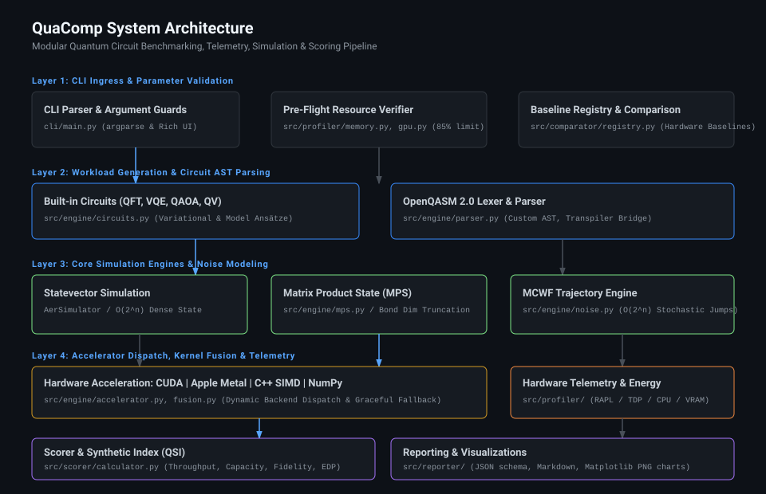
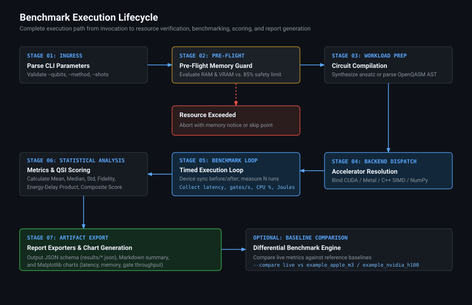
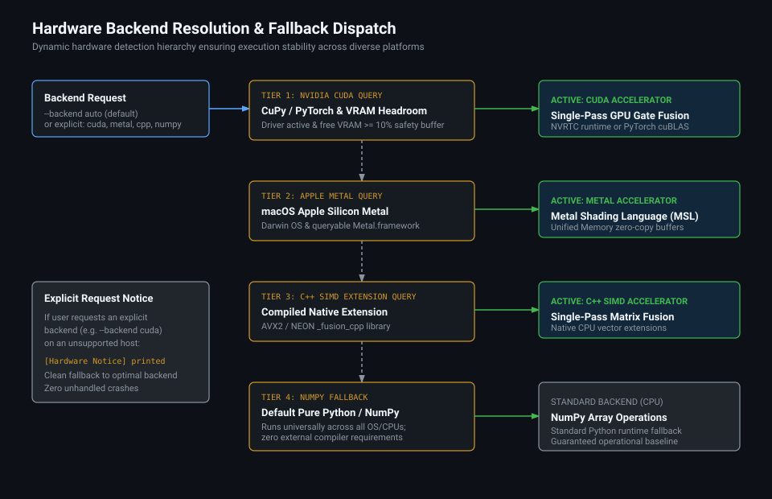
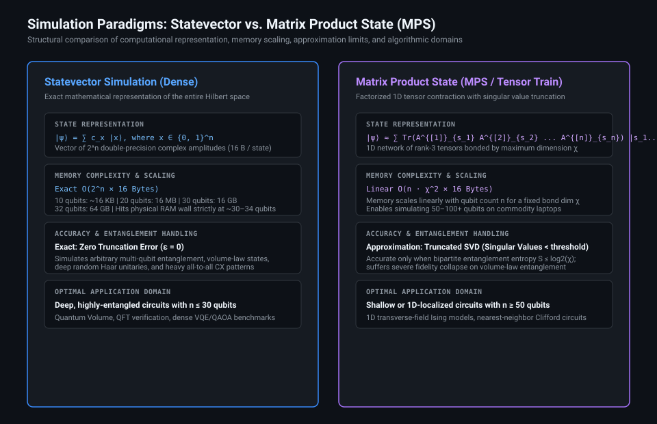
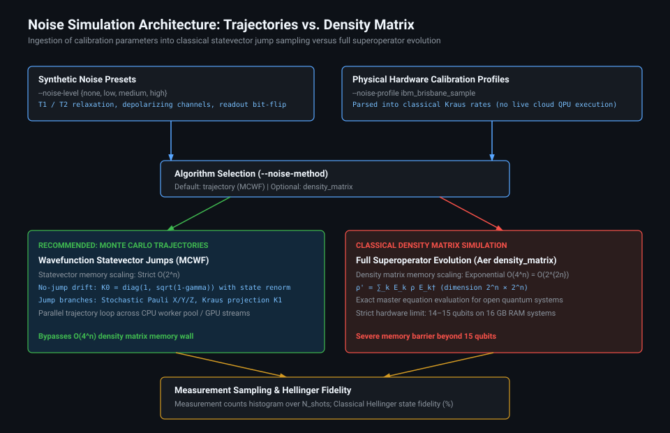

System design, execution lifecycle, backend dispatch, simulation scaling paradigms, and noise models.
Modular pipeline spanning CLI ingress, AST compilation, simulation engines, hardware dispatch, and telemetry reporting.

End-to-end workflow from argument validation, pre-flight safety checks, timed multi-run execution, to statistical analysis.

Automated hardware hierarchy checking CUDA, Apple Metal, C++ SIMD, and pure NumPy baselines.

Detailed comparison of exact exponential dense states versus linear tensor trains with singular value truncation.

Monte Carlo Wavefunction (MCWF) stochastic jumps vs. full density matrix superoperator evolution.
